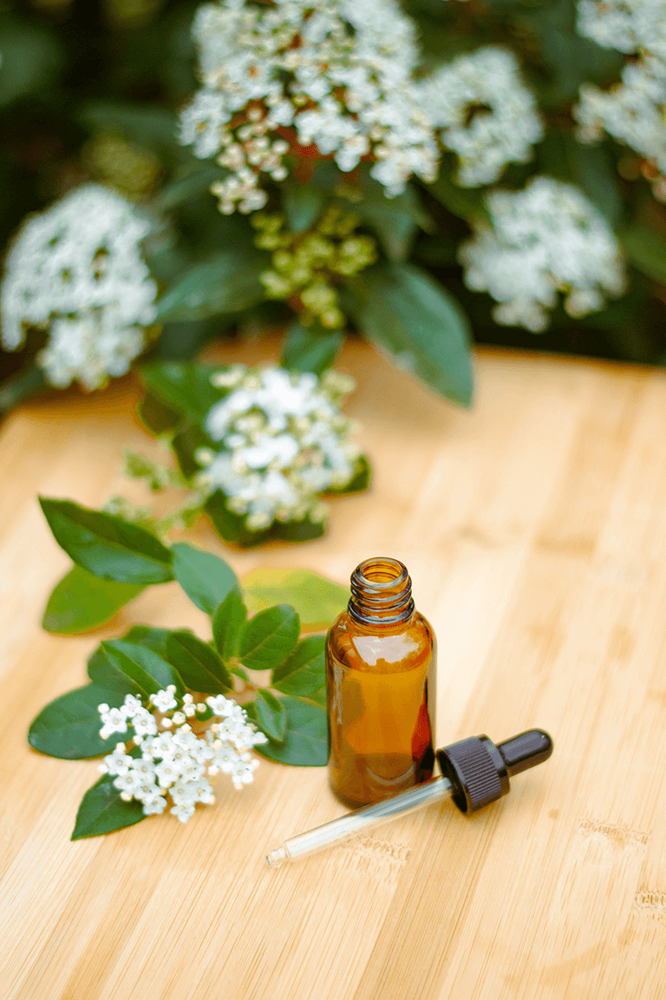

Servicios
Terapia Floral para Personas
Nuestro servicio de terapia floral se enfoca en equilibrar y armonizar tus emociones, promoviendo el bienestar interior y la serenidad emocional. A través de las Flores de Bach, diseñamos un tratamiento personalizado para abordar las emociones específicas que estés experimentando.
Nuestra terapia floral puede ser beneficiosa en diversas situaciones cotidianas, como ansiedad, estrés, tristeza, inseguridad, falta de motivación, dificultades en las relaciones, exámenes, duelo, insomnio, entre otras. También puede ayudar a enfrentar cambios importantes en la vida, momentos de crisis, o simplemente buscar un mayor equilibrio emocional y autodescubrimiento.
¿Cómo trabajaremos?
Una vez que hayamos identificado tus necesidades emocionales, prepararemos un gotero personalizado con las esencias florales más adecuadas para tu caso particular. Este gotero te será enviado a tu domicilio, listo para ser utilizado.
El gotero personalizado suele durar aproximadamente 15 días, durante los cuales te recomendamos tomar 4 gotas, 4 veces al día, directamente en la boca o mezcladas con agua o algún líquido de tu preferencia.
Además, te enviaremos un mensaje con información sobre las flores que estás tomando, para que puedas conocerlas mejor y entender cómo te ayudarán a encontrar el equilibrio emocional.
Finalmente, agendaremos una sesión de seguimiento dentro de los 15 días para evaluar los resultados de tu tratamiento y hacer los ajustes necesarios para seguir abordando tus necesidades emocionales de manera efectiva.
Nuestro objetivo es acompañarte en tu camino hacia el bienestar emocional y ofrecerte un tratamiento personalizado que te ayude a florecer en plenitud en todas las facetas de tu vida. ¡No dudes en contactarnos para comenzar este hermoso viaje de autodescubrimiento y equilibrio interior!
¡Reserva tu sesión ahora!Terapia Floral para Mascotas
¡Tu mascota merece bienestar emocional! Nuestra Terapia Floral de Bach para mascotas es ideal para abordar ansiedades, miedos, agresividad, visitas al veterinario, pre y post quirurgicos, angustia por separación, somatizaciones emocionales, mudanzas, miedo a los truenos, comportamientos compulsivos o destructivos y otros problemas emocionales en perros y gatos especialmente. Ayuda a tu compañero a encontrar tranquilidad y serenidad con nuestras esencias florales especialmente seleccionadas.
¿Cómo trabajaremos?
Una vez que hayamos identificado las necesidades emocionales de tu mascota, prepararemos un gotero personalizado con las esencias florales más adecuadas para su caso particular. Este gotero te será enviado a tu domicilio, listo para ser utilizado.
El gotero personalizado suele durar aproximadamente 15 días, durante los cuales te recomendamos darle 4 gotas, 4 veces al día, directamente en la boca o mezcladas con balanceado, agua o snack de su preferencia.
Además, te enviaremos un mensaje con información sobre las flores que está tomando, para que puedas conocerlas mejor y entender cómo le ayudarán a encontrar el equilibrio emocional.
Finalmente, agendaremos una sesión de seguimiento dentro de los 15 días para evaluar los resultados de su tratamiento y hacer los ajustes necesarios para seguir abordando sus necesidades emocionales de manera efectiva.
Nuestro objetivo es sostener a tu mascota emocionalmente, ya que ellos no cuentan con las mismas herramientas o terapias con las que contamos los humanos para procesar nuestro mundo emocional. Ellos dependen enteramente de nosotros para que les proporcionemos la mejor calidad de vida posible. Las Flores de Bach van a convertirse en el aliado imprescindible para que pueda vivir en tranquilidad y armonía.
¡Contáctanos para más información!Terapia Floral en conjunto: mascota y dueño
¿Tu mascota y tú están pasando por un momento difícil? ¿Tu mascota está reflejando tus emociones? ¿Te gustaría trabajar en conjunto con tu mascota para encontrar el equilibrio emocional?
¡Nuestra terapia floral en conjunto es ideal para ti! A través de las Flores de Bach, trabajaremos en conjunto para encontrar el equilibrio emocional que necesitan. ¡No dudes en contactarnos para comenzar este hermoso viaje de autodescubrimiento y equilibrio interior!
Al compartir esta experiencia de terapia floral, se crea un ambiente de calma y serenidad en el hogar, promoviendo una mayor comprensión mutua y una comunicación emocional más fluida entre las mascotas y sus cuidadores.
El gotero personalizado, uno para la mascota y otro para el dueño, contienen esencias florales seleccionadas específicamente para abordar las necesidades emocionales de ambas partes. Este tratamiento conjunto permite que tanto las mascotas como sus dueños se beneficien de una mayor tranquilidad, equilibrio emocional y bienestar general.
El proceso de administración de las flores se convierte en un momento de conexión especial entre la mascota y su cuidador, creando una atmósfera de amor y cuidado mutuo.
Te invitamos a disfrutar de esta hermosa experiencia conjunta con tu mascota, donde ambos podrán compartir el camino hacia una vida más plena y emocionalmente equilibrada. ¡Nuestro equipo está aquí para brindarles apoyo y acompañamiento en esta maravillosa aventura de sanación y armonía emocional! No dudes en contactarnos para comenzar este camino de bienestar compartido.
¡Los esperamos!